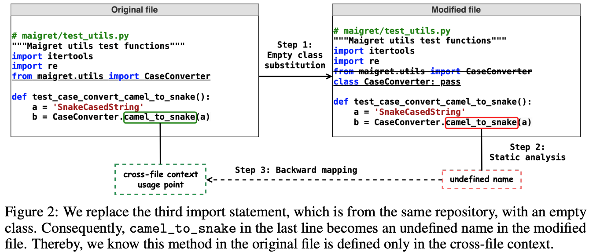
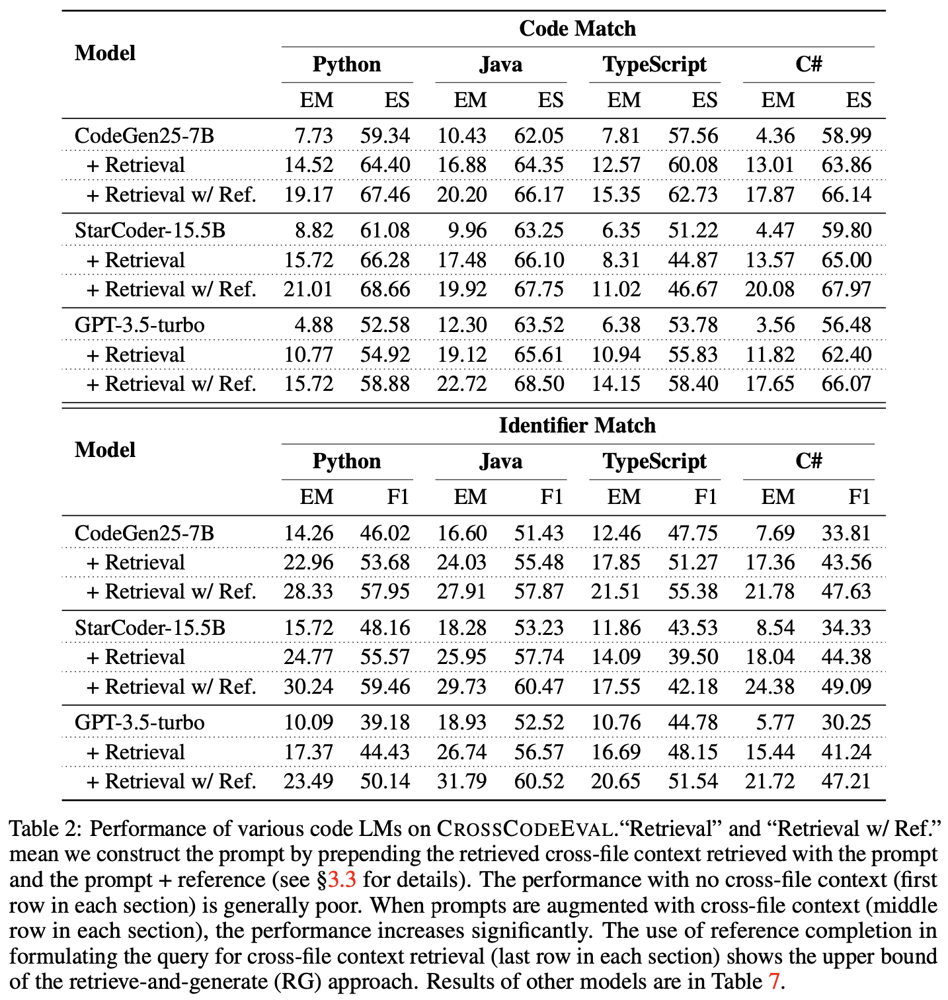
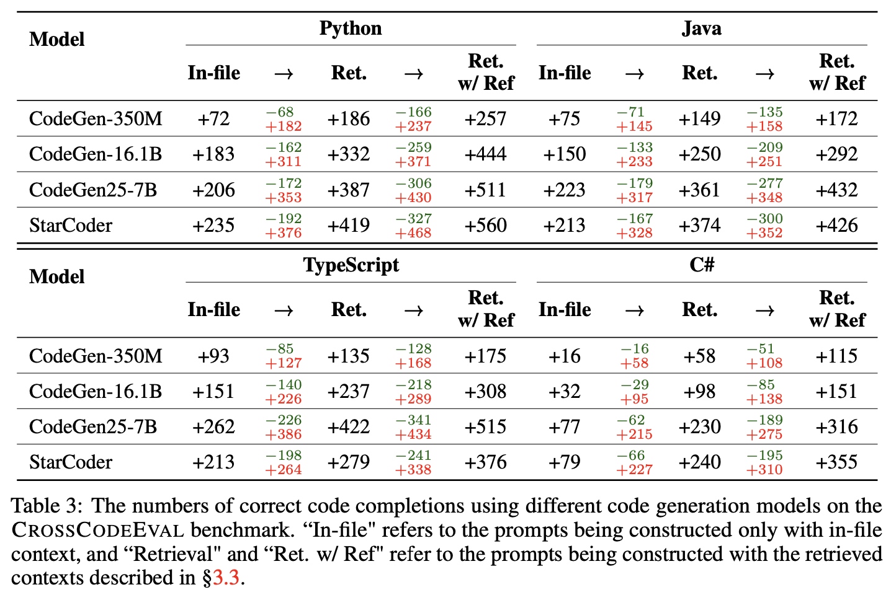
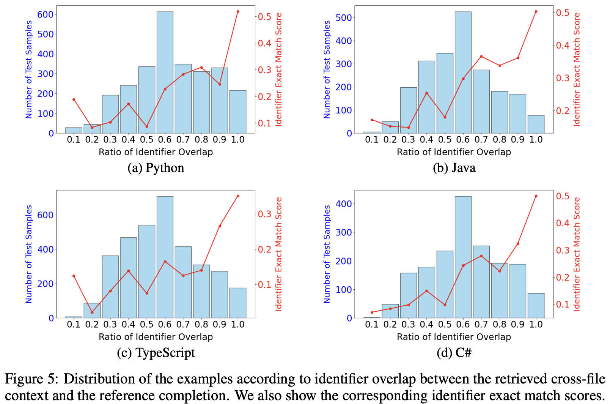
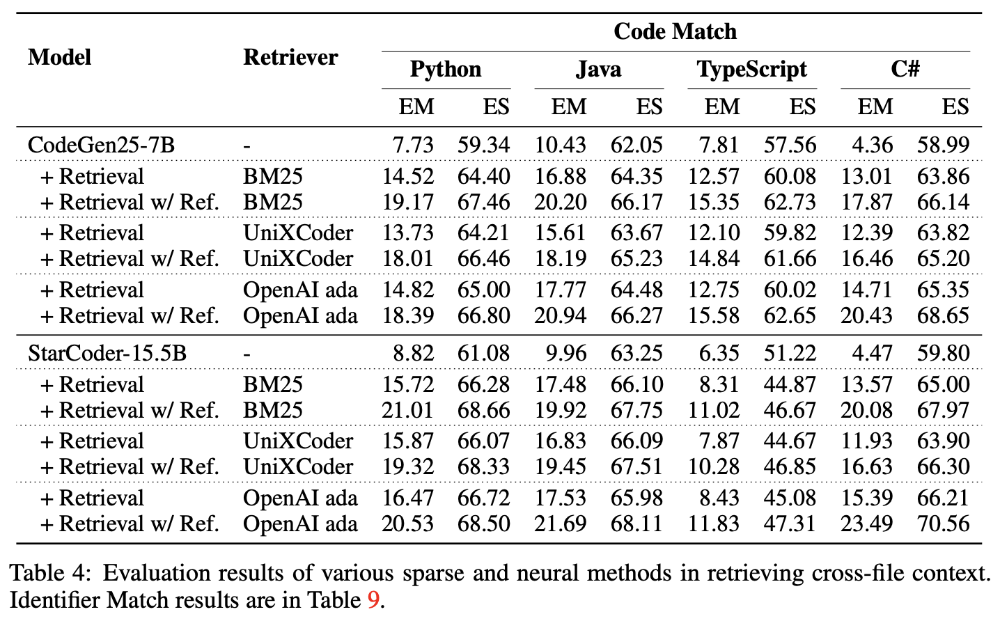

CrossCodeEval's code and data are available at https://github.com/amazon-science/cceval
Code completion models have made significant progress in recent years, yet current popular evaluation datasets, such as HumanEval and MBPP, predominantly focus on code completion tasks within a single file. This over-simplified setting falls short of representing the real-world software development scenario where repositories span multiple files with numerous cross-file dependencies, and accessing and understanding cross-file context is often required to complete the code correctly.
To fill in this gap, we propose CrossCodeEval, a diverse and multilingual code completion benchmark that necessitates an in-depth cross-file contextual understanding to complete the code accurately. CrossCodeEval is built on a diverse set of real-world, open-sourced, permissively-licensed repositories in four popular programming languages: Python, Java, TypeScript, and C#. To create examples that strictly require cross-file context for accurate completion, we propose a straightforward yet efficient static-analysis-based approach to pinpoint the use of cross-file context within the current file.
Extensive experiments on state-of-the-art code language models like CodeGen and StarCoder demonstrate that CrossCodeEval is extremely challenging when the relevant cross-file context is absent, and we see clear improvements when adding these context into the prompt. However, despite such improvements, the pinnacle of performance remains notably unattained even with the highest-performing model, indicating that CrossCodeEval is also capable of assessing model's capability in leveraging extensive context to make better code completion. Finally, we benchmarked various methods in retrieving cross-file context, and show that CrossCodeEval can also be used to measure the capability of code retrievers.
We collect permissively-licensed repositories from GitHub across four programming languages: Python, Java, TypeScript, and C#. We leverage a static-analysis-based approach to identify code fragments that require cross-file context automatically. Specifically, we replace import statements with empty classes, and run static analysis to identify undefined names which locate cross-file usages.

Statistics: We present the statistics of CrossCodeEval. We use the StarCoder tokenizer to compute the number of tokens.
We benchmark CrossCodeEval with popular public and proprietary large language models: CodeGen, SantaCoder, StarCoder, and GPT-3.5-turbo. We prompt the language models in the zero-shot manner under the following three settings with different levels of cross file context.
In evaluating the performance of code language models, we report performance in two main categories: code match and identifier match.
Our results show that code LMs perform poorly with only current-file context. The performance improves dramatically when the cross-file context is added to the prompts, regardless of the size of code LMs.
Looking at changes in the number of correct completions (based on exact match to the references) across different prompt settings, we find all models follow a trend that the performance improves with better cross-file context. However, the variation of correct/incorrect generation is significant among different models.
Identifiers are a significant part of programming language constructs that cover API mentions in source code. We find that an increased ratio of identifier overlap between the retrieved context and the reference solution generally results in higher performance, demonstrating a positive correlation. This calls for an investigation into retrieval techniques, with a particular emphasis on key terms like identifiers for cross-file context retrieval.
Given the strong dependency that the correct prediction requires an accurate retrieval of relevant cross-file context, we propose to use CrossCodeEval as a code retrieval benchmark. We find that OpenAI's ada embedding generally performs the best, but its downstream generation accuracy is still suboptimal (<20 EM), calling for future development of better code retriever.
@inproceedings{CrossCodeEval,
title={CrossCodeEval: A Diverse and Multilingual Benchmark for Cross-File Code Completion},
author={Yangruibo Ding, Zijian Wang, Wasi Uddin Ahmad, Hantian Ding, Ming Tan, Nihal Jain, Murali Krishna Ramanathan, Ramesh Nallapati, Parminder Bhatia, Dan Roth, Bing Xiang},
url={https://arxiv.org/abs/2310.11248},
year={2023},
}